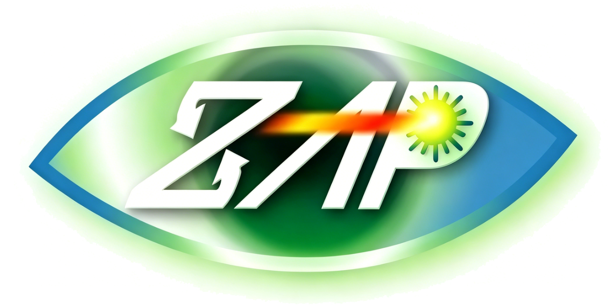
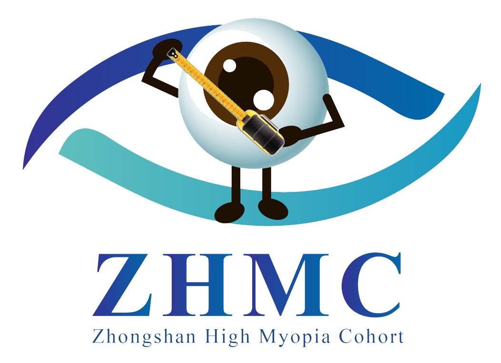
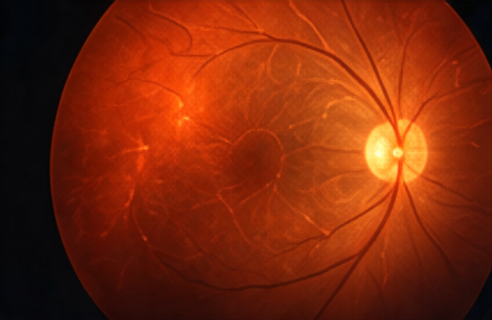

Zhongshan Ophthalmic Center · Sun Yat-sen University
ZOC-OEC unites longitudinal cohort research, multimodal ophthalmic imaging, and AI-driven risk prediction to advance global vision science and open international collaboration.
Our Cohorts
Each cohort provides longitudinal data underpinning ZOC-OEC's scientific output and global collaboration programmes.

ZAPZhongshan Angle-Closure Prevention Trial
Landmark RCT evidence for angle-closure prevention, with 18-year follow-up and deep AS-OCT phenotyping.
Guangzhou Diabetic Eye Study
A deeply phenotyped diabetic eye cohort linking retinal imaging with proteomics, metabolomics, and systemic outcomes.

ZHMCZOC–BHVI High Myopia Cohort
Longitudinal high-myopia data integrating OCT/OCTA biomarkers, AI progression models, and intervention studies.
Research Focus

Featured Publications